About Me
Website Design Philosophy
- If your website isn't driving sales or increasing awareness of your awesomeness, it doesn't matter how good it looks.
- The holy grail of website design is a balance between telling your story and giving the user what they need.
- Content is king, Context is queen, and Content Marketing is your key to the kingdom.
- Details matter, but not so much as the big picture
- There is always a solution, which can always be improved.
What I do
- Web design and front-end development - WordPress themes, responsive html5 websites
- Take your mock-ups from psd to living / breathing html
- Email newsletter design
- Strategize with you to come up with an effective social media campaign
- Organize your site's content to put the important stuff front and center
- Graphic Design - postcards, invitations, brochures, posters

More about me
- I live in a teensy apartment in Brooklyn, NY.
- I'm both a left brain AND a right brain kind of person. (Don't scoff! It can happen.)
- I am the proud owner of a kick-ass and gorgeous Vox Continental organ - the first or second one ever made.
- I can sew, knit, drive a stick shift, retile a floor, and find my way out of a forest with a compass.
- I have an enormous cat and a Mini Cooper.
What I'm doing in my spare time
- Riding horses over jumps -
though the jumps are pretty dinky. - Satisfying a sugar craving by baking up some cookies.
- Learning something new because I don't know it all yet.
- Teaching my cat to sit up and jump through a hoop on command.
- Writing a television pilot script for sh*ts and giggles.